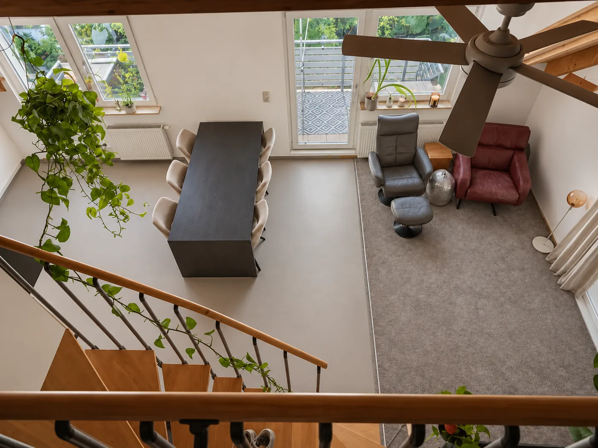
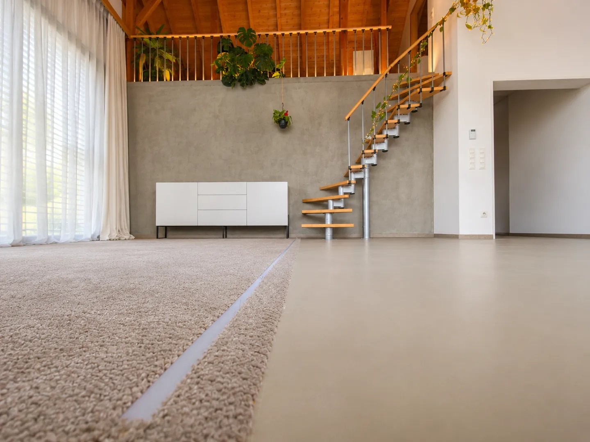
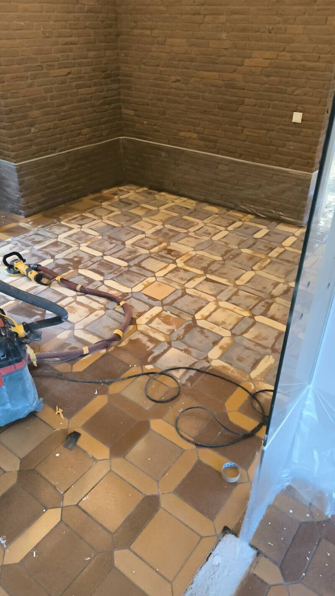
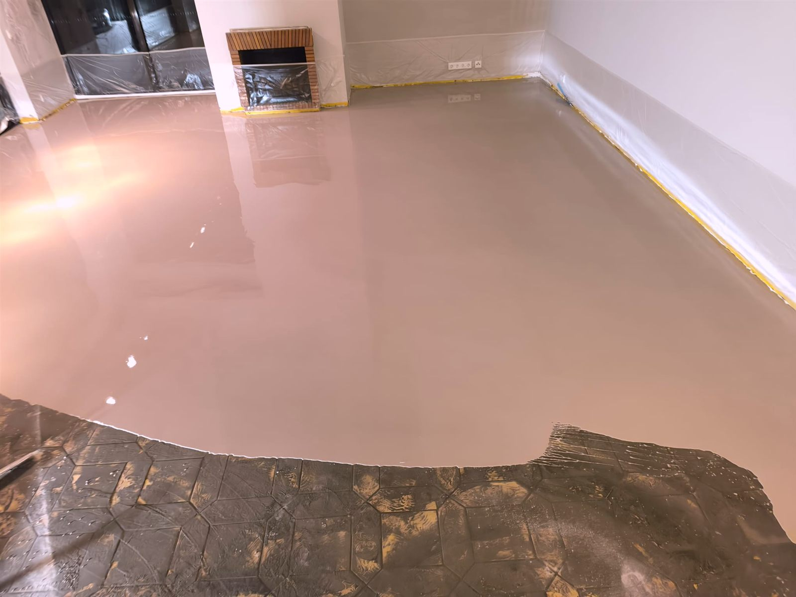
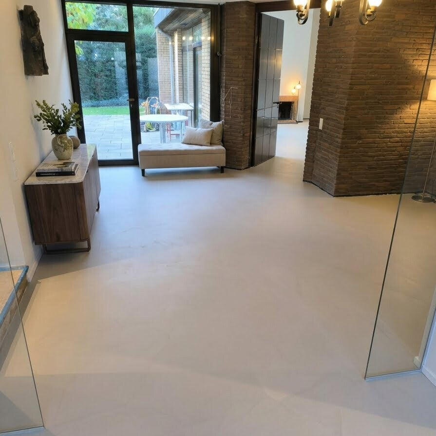
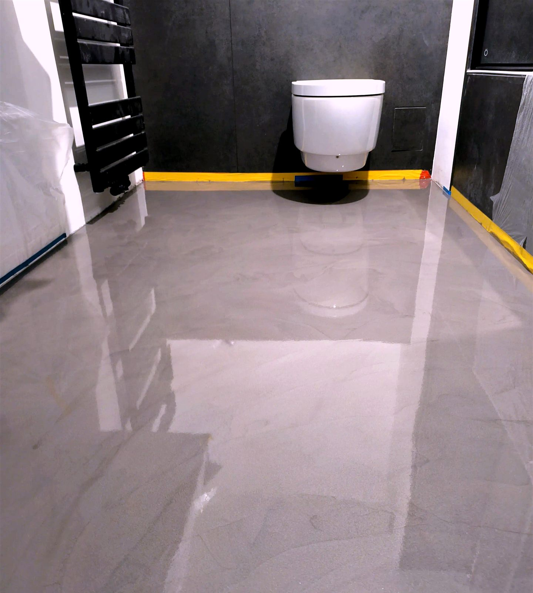
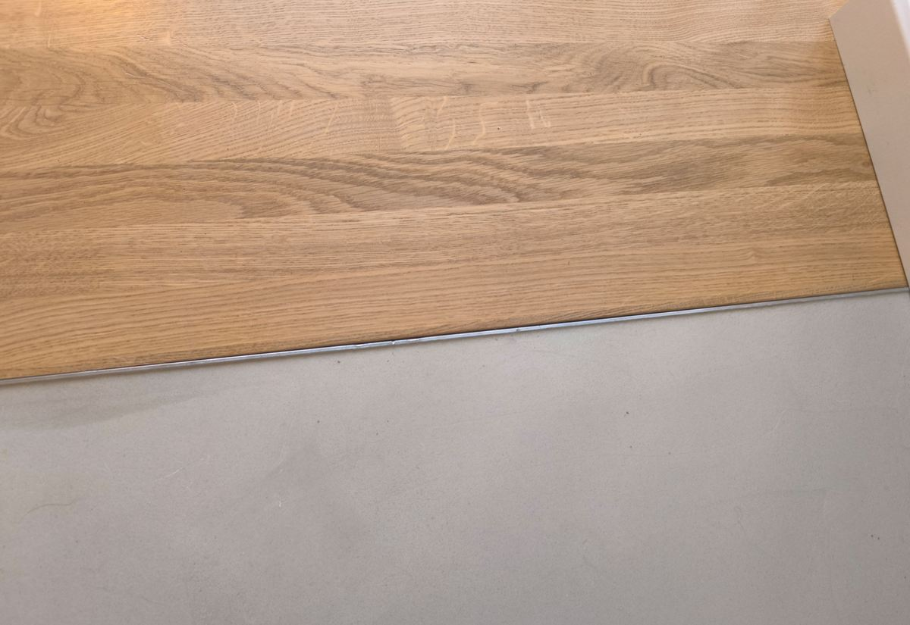
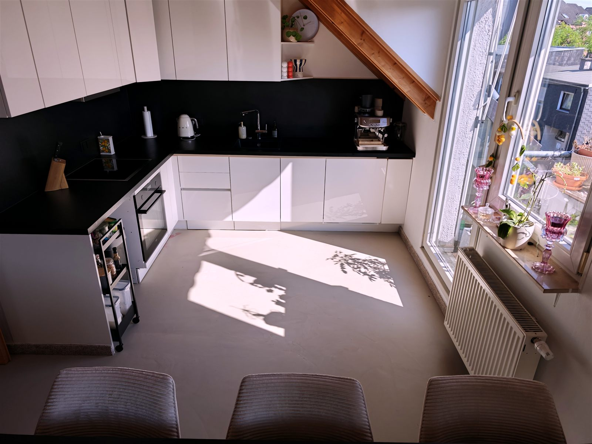
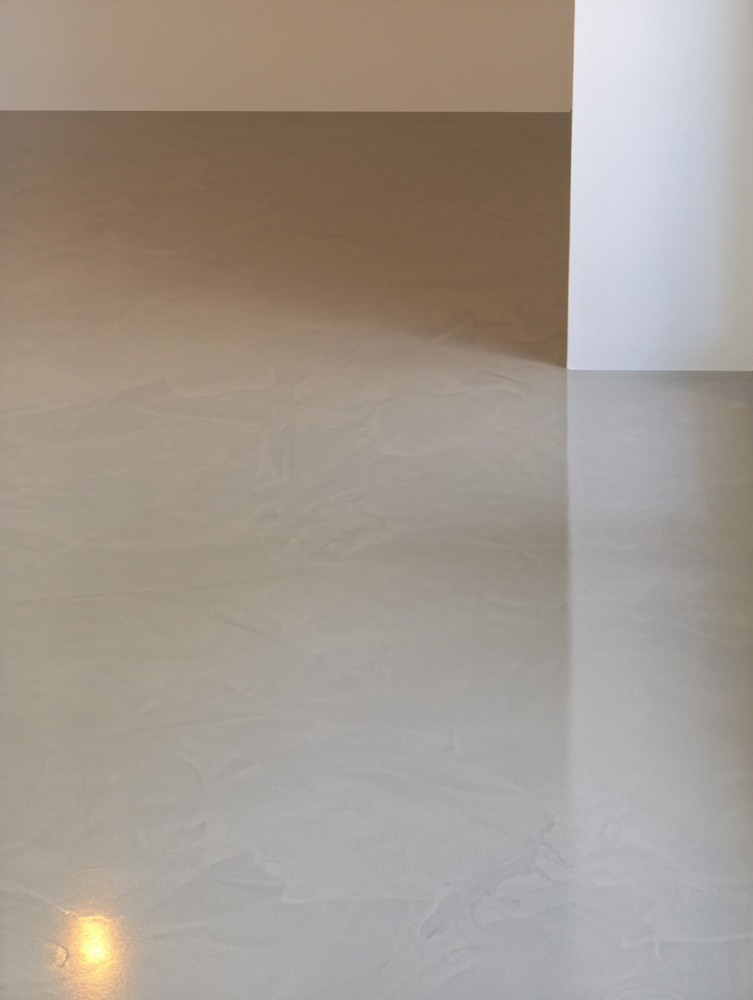

Stilvoll · Komfortabel · Zeitlos
Hochwertige Bodenbeschichtungen für Wohn- und Objektbereiche — ruhige, großzügige Flächen, individuell abgestimmt auf Raum, Einrichtung und Nutzung.
Referenz
Fugenlose PU-Böden schaffen ruhige, großzügige Flächen. In diesem Wohnbereich trifft eine matte PU-Oberfläche auf Teppichboden, ein integriertes Lichtprofil und präzise ausgeführte Übergänge.
WhatsApp Anfrage

Referenz
Der vorhandene Fliesenbelag wurde angeschliffen, gereinigt und nivelliert. Darauf entstand ein mineralbeiger, seidenmatt versiegelter PU-Boden.




Auch im Bad
Fugenlose Böden sind feuchtigkeitsbeständig und somit auch im Badezimmer eine saubere Alternative zu Fliesen.
Passende Wände in Betonoptik ansehen →Vorteile
Referenz
Minimalistische Übergänge zu angrenzenden Bauteilen und Belägen ergänzen die zeitlose, klare Optik.
WhatsApp Anfrage
Projekte
Eindrücke aus aktuellen PU-Projekten in Köln und Umgebung.


Untergrund, Bauzustand und Nutzung entscheiden. Anhand weniger Eckdaten prüfen wir Ihr Projekt — unverbindlich.